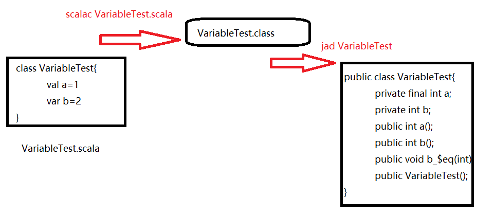

Scala是一门怎样的语言，具有哪些优点？
- 快速实验
- 快速尝试各种语法和代码
- 一致性
- 静态类型系统+面向对象+函数式编程
- 面向对象
- 所有的变量和方法都封装在对象中
- 函数式编程
- 函数可以独立存在，可以定义一个函数作为另外一个函数的返回值，也可以接受函数作为函数的参数
- 异步编程
- 函数式编程提倡变量不可变，使得异步编程变得十分容易
- 基于JVM
- Scala会被编译成为Bytecode，所以Scala能无缝集成已有的Java类库
Scala
1 | def products=orders.flatMap(o=>o.products) |
Java
1 | public List<Product> getProducts(){ |
Scala语法基础-从Hello World说起
1 | Public class HelloWorld{ |
Scala值和变量声明
- val变量和var变量
- val声明的变量不可变，相当于java中的final
- val a = 1
- a = 2 // 出错啦
- var声明的变量可变
- var a = 1
- a = 2 // OK
- val声明的变量不可变，相当于java中的final
- 在scala的类中，val会自动带有getter方法，var会自动带有getter和setter方法

Scala常用类型
- Scala没有区分基本类型和包装类型，统一定义为class类。
- 1.toString() // 生成字符串1
- 7种数值类型+1种Boolean类型
- Byte -> RichByte
- Char -> RichChar
- Short -> RichShort
- Int -> RichInt
- Long -> RichLong
- Float -> RichFloat
- Double -> RichDouble
- 在基本数据类型上使用那些没有提供的方法时，scala会尝试“隐式转换”转换成增强类型
1 | • 方法定义 |
函数的定义和使用
- 函数定义
- 函数在scala中是一等公民
- val 函数名:(参数类型1, … , 参数类型n)=>返回值类型 = (T1,…, Tn) => 函数体
- val f0:(Int)=>Boolean=i=>{i%2==0}
- val f1:Int=>Boolean=i=>{i%2==0}
- val f2:Int=>Boolean=i=>i%2==0
- val f3:Int=>Boolean=i=_%2==0
- val 函数名 = (参数名1: 参数类型1, … , 参数名n: 参数类型n) =>函数体
- val add0=(x:Int,y:Int)=>{x+y}
- val add1=(x:Int,y:Int)=>x+y
- val add2=(Int,Int)=>Int=>(x+y)=>{x+y}
- val add3=(Int,Int)=>Int=>(x+y)=>x+y
- 函数必须有参数列表，否则报错
- val f1 = => 100 // 错误
- val f2 = () => 100 // 正确
函数与方法区别
- 方法不可以赋值给变量但是函数可以
1
2
3
4
5
6def m1(a:Int,b:Int)={
a+b
}
val m=m1 //错误：方法不可以赋值给一个变量
val m=m1_ //正确：方法自动转换为函数
m:(Int,Int)=>Int=<function2> - 对于一个无参数的方法是没有参数列表的，而对于函数是有一个空参数列表。
1
2
3
4def x=println("Hi Scala")
x:Unit
val y=x
y:()=>Unit=<function0> - 函数名后必须加括号才代表函数调用，否则为该函数本身，而方法名后不加括号为方法调用
1
2
3y //仅代表函数本身
res0:()=>Unit=<function0>
y()//函数调用Scala的call-by-name和call-by-value
传值调用（call-by-value）：先计算参数表达式的值，再应用到函数内部
传名调用（call-by-name）：将未计算的参数表达式直接应用到函数内部当调用callByName 运行结果是：1
2
3
4
5
6
7
8
9
10
11
12
13
14
15
16
17
18object testCallBy {
def main(args: Array[String]): Unit = {
callByName(something())
}
def something() = {
println("calling something")
1 // return value
}
def callByValue(x: Int) = {
println("x1=" + x)
println("x2=" + x)
}
def callByName(x: => Int) = {
println("x1=" + x)
println("x2=" + x)
}
}
calling something
x1=1
calling something
x2=1
当调用callByValue 运行结果是：
calling something
x1=1
x2=1
两者对比
call-by-value在进入函数体之前就对参数表达式进行了计算，这避免了函数内部多次使用参数时重复计算其值，在一定程度上提高了效率。
但是call-by-name的一个优势在于，如果参数在函数体内部没有被使用到，那么它就不用计算参数表达式的值了。在这种情况下，call-by-name的效率会高一点。
1 | object notUse { |
方法useOrNotUse的第三个参数y被定义为call-by-name的。当flag=true时，方法useOrNotUse不需要使用到y。所以不会调用getANumber()方法。结果如下：
1
当我们把flag设置为false时，需要用到y，此时才会调用getANumber()方法。此时运行结果如下：
getANumber调用了
3
Example - 方法计时器
1 | object TimeTest{ |
循环和高级for循环
拥有于java相同的while和do循环
1
2
3while(x>0){
//do while
}for循环于java不同
1
2
3
4
5
6
7
8
9
10
11
12
13
14
15for(x <- 表达式){
//do for
}
for(x <- 1 to n){
//do for
}
for(x <- "Hello,World!"){
//do for
}
val s="Hello,World!"
//(until 包前不包后,每次迭代为1) by x 自定义步长
for(x <- 0 until s.length by 2){
//do for
}常见集合使用

C 操作时间为常数
eC 操作时间在满足某些假设的前提下为常数
aC该操作的均摊运行时间为常数。某些调用的可能耗时较长，但多次调用之下，每次调用的平均耗时是常数。
L 操作是线性的，耗时与容器的大小成正比。

- map
- 在列表中的每个元素上计算一个函数,并且返回一个包含相同数目元素的列表
1
2val nums =List (1,2,3)
val squareNurns1= nums.map(num => num*num)
- 在列表中的每个元素上计算一个函数,并且返回一个包含相同数目元素的列表
- flatMap
- 结合了map和flatten的功能,接收一个可以处理 套列表的函数,把返回结果连接起来
1
2val nestedNumbers = List(List(1,2), List(3,4))
nestedNumbers.flatMapl(x=> x.map(Math.pow(_,2)))
- 结合了map和flatten的功能,接收一个可以处理 套列表的函数,把返回结果连接起来
- filter
- 移除任何使得传入的函数返回false的元素
1
2val nums = Lis(1,2,3,4)
nums.filter((i:Int) =>i% 2==0)
- 移除任何使得传入的函数返回false的元素
- zip
- 两个列表的元素合成一个由元组对组成的列表里
1
List(1,2,3).zip(List("a","b","c"))
- 两个列表的元素合成一个由元组对组成的列表里
- partitior
- 断言函数的返回值对列表进行拆分
1
List(1,2,3,4,5,6,7,8,9,10).prtition(_% 2 ==0)
- 断言函数的返回值对列表进行拆分
异常处理
Java
1 | try{ |
Scala使用模式匹配捕获异常
1 | try{ |
- 如果在.map, .flatMap中遇到异常如何处理？
- Scala提供了scala.util.Try 类型更加优雅的处理异常
- 如果成功返回Success
- 如果抛出异常返回Failure并携带异常信息
1 | import scala.util.{Try,Success,Failure} |
类定义

类继承
- Scala继承类和java一样使用extends关键字
- 可以将类、字段或者方法声明为final，确保它们不能被重写
- 重写一个非抽象方法必须使用override关键词
- 可以将类定义为abstract作为抽象类，子类中重写超类的抽象方法时不需要使用override关键词
- 调用超类与Java一致使用super关键词
- 只有主构造器才能调用超类的构造器

单例对象

函数式编程思想
- 函数式编程关心的是数据的映射而命令式编程关心的是解决问题的步骤
- 函数式编程提倡
- 没有可变的变量
- 例如无论sqrt(x)，这个函数的值只取决于函数的输入的值
- 没有类似于命令式编程中循环元素
- 没有可变的变量
- 好处
- 不依赖于外部的状态，也不修改外部的状态，使得代码容易推理，单元测试和调试变得十分容易
- 由于多个线程之前不共享状态，因此不会造成资源的竞争，可以更好的支持并发
函数式编程思想Example